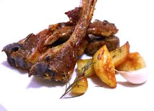

Paidakia Recipe

Description
Tender Greek Lamb Chops-Paidakia will excite your taste buds on the very first bite.
Paidakia are marinated in extra virgin olive oil, mustard, lemon, and fresh herbs.
Grilled on charcoal, broiled or roasted in the oven, they are delicious and aromatic,
guaranteed to impress your guests and family
Ingredients
- Lamb chops
- Coarse sea salt and freshly ground pepper
- Fresh oregano leaves, thyme or rosemary
- Dijon mustard
- Lemons
- Extra virgin olive oil
Steps
- Marinate - In a small bowl,
combine the olive oil, mustard, and lemon zest
and mix well with a spoon. Pour the mixture over
the ribs, cover, and refrigerate for about one hour.
You can marinate them for up to 4-5 hours.
- Preheat the oven to 200° C.
- Brush a large baking sheet (or two) with olive oil.
Arrange the lamb ribs in a single layer.
Roast in the oven for about 20 - 25 minutes until they are
golden brown.
- Serving - Drizzle with much lemon juice to taste and
serve on a platter with warm toasted pita bread,
salads and tzatziki sauce.